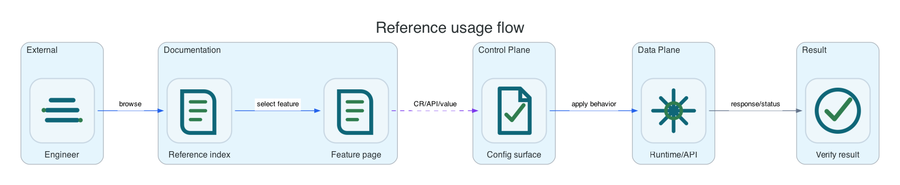

Reference for runtime behavior and platform ownership.
Use this page when you already know what you are trying to configure and need exact S3 behavior, runtime operations, or platform-specific ownership for OpenShift, Helm, Linux, or Windows.
How To Use This Reference
Choose the behavior layer
Use S3 API reference for client behavior, runtime reference for durability and operations, and platform reference for the installation-specific control surface.
Keep install modes separate
Operator, Helm, Linux, and Windows distributions are separate delivery paths. Do not mix operator CRDs, Helm releases, and host package control planes in the same target.
Validate from a workload
After the platform reports healthy runtime state, test from AWS CLI or an AWS SDK configured with endpoint override, region, and issued credentials.
Reference groups
S3 API compatibility
Bucket APIs, object APIs, multipart uploads, tags, metadata, policies, lifecycle, replication, encryption, Object Lock, S3 Select, and intentionally excluded AWS-only integrations.
Runtime and infrastructure
Storage topology, data protection, metadata durability, identity, internal security, observability, audit, healing, and high availability behavior common to all platforms.
OpenShift Operator
OLM ownership, CRDs, OpenShift consumption APIs, OAuth-protected bucket browsing, Routes, PVCs, ServiceMonitor, PrometheusRule, and operator-managed documentation delivery.
Helm / Kubernetes
Chart values, rendered Kubernetes resources, release ownership, Helm upgrade/rollback behavior, and non-CRD bucket provisioning paths.
Linux packages
RPM/DEB lifecycle, systemd units, host paths, firewall, service logs, cluster bootstrap, node maintenance, and package upgrade behavior.
Windows packages
MSI/ZIP lifecycle, Windows services, host paths, firewall rules, event logs, cluster bootstrap, node maintenance, and package upgrade behavior.
Compatibility rule
OpenShift Operator CRD Ownership
This section applies only to the OpenShift operator installation. Helm, Linux, and Windows installations use their platform reference pages instead of these CRDs.

| CRD | Primary purpose | Expected user | Output |
|---|---|---|---|
S3Storage | Deploy and operate one Li9 S3 runtime instance. | Platform administrator | Deployments, StatefulSets, Services, PVCs, routes, observability resources, status conditions. |
S3Bucket | Declare an application bucket on a selected storage instance. | Tenant admin or app team | Bucket state, endpoint references, generated implementation objects. |
S3BucketAccess | Create scoped credentials and access rules for one bucket. | Application engineer | Kubernetes Secret with AWS-compatible access key, secret key, endpoint, bucket, and region. |
S3BucketPolicy | Attach AWS-style policy behavior to a bucket. | Security/platform team | Policy applied through runtime policy service and reflected in status. |
S3BucketLifecycle | Configure object lifecycle and expiration behavior. | Storage admin | Lifecycle rules delivered to runtime lifecycle processing. |
S3ArchivePolicy | Attach bucket-level archive movement rules. | Storage admin | Archive policy status and runtime configuration. |
S3ReplicationTarget | Configure reusable remote S3-compatible targets for global replication. | Storage admin | Target validation status and credentials binding. |
S3BucketReplication | Configure local and global bucket replication rules. | Storage admin | Replication policy status and runtime configuration. |
S3Documentation | Deploy a single documentation site for runtime and operator docs. | Platform administrator | One Deployment, one Service, optional OpenShift Route, and published URL. |
S3 API Scope
| Area | Supported direction | Boundary |
|---|---|---|
| Bucket and object APIs | Primary AWS CLI/SDK compatibility target. | Clients must use endpoint override for the Li9 S3 gateway. |
| Multipart upload | Required for real workload compatibility and large objects. | Part commit must preserve object integrity under node restart and degraded storage state. |
| Bucket policy | AWS IAM/S3 policy language where it can be enforced locally. | AWS account-level services are not assumed. |
| Lifecycle, archive, replication | Product-local automation through the active platform control surface. | Rules must not depend on AWS-only services unless an interchangeable external target is configured. |
| Server-side encryption | Product-local KMS-compatible key handling. | External KMS integrations must be optional and replaceable. |
| Notifications and analytics | Out of default scope unless backed by local or interchangeable services. | AWS EventBridge, Lambda, CloudWatch, Glue, and account services are not required platform dependencies. |
Default Operational Signals
| Signal | What it tells an operator | Where to look |
|---|---|---|
| Gateway request latency and error rate | Client-visible S3 health and API compatibility failures. | User workload Prometheus, route metrics, gateway logs. |
| Metadata quorum and WAL lag | Whether the metadata plane can accept writes safely. | Metadata service metrics and the platform-specific health surface. |
| Protected write commit failures | Whether erasure coding or replication reached the required durability level. | Storage node metrics, object service metrics, alert rules. |
| Healing backlog | How much data must be repaired after node or PVC disruption. | Storage node metrics and operator status messages. |
| Bucket policy denials | Whether access failures are expected policy decisions or runtime errors. | Policy service metrics and audit logs. |
| Documentation endpoint status | Whether the documentation endpoint is reachable for the selected installation. | S3Documentation.status.url for OpenShift, Helm release output, or host service status for native packages. |